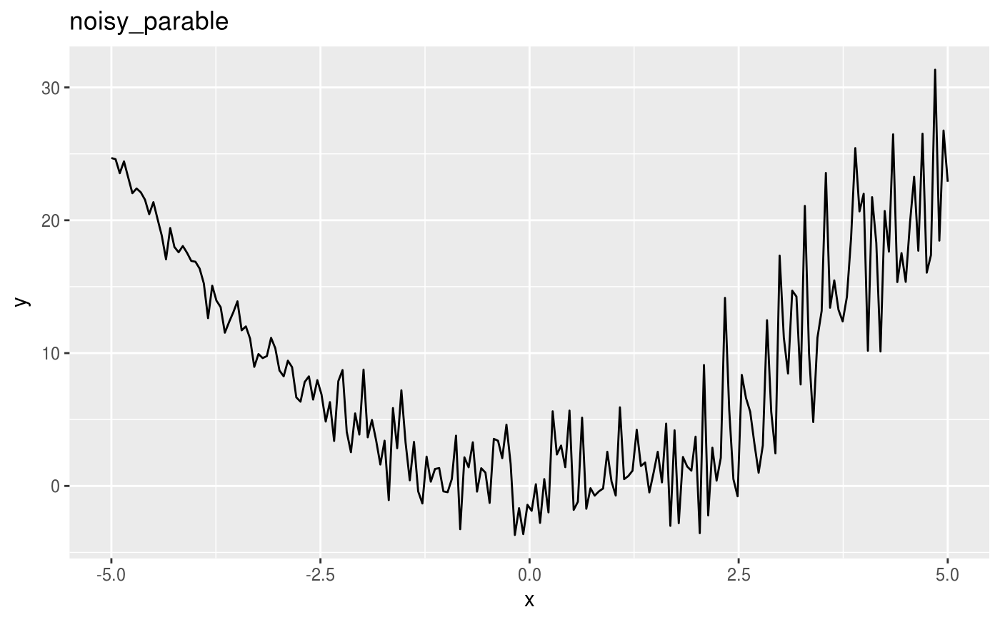
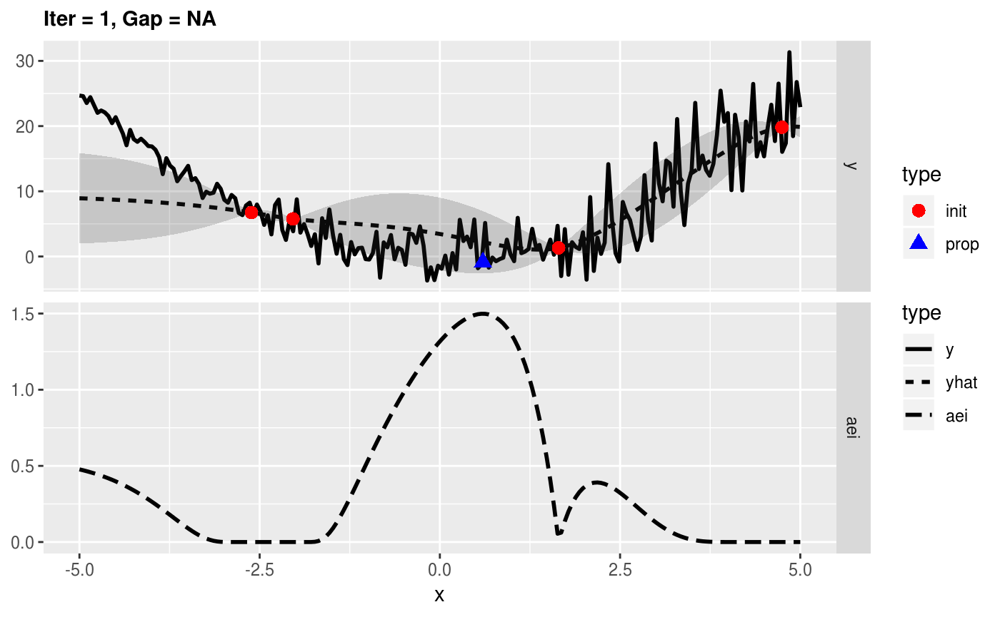
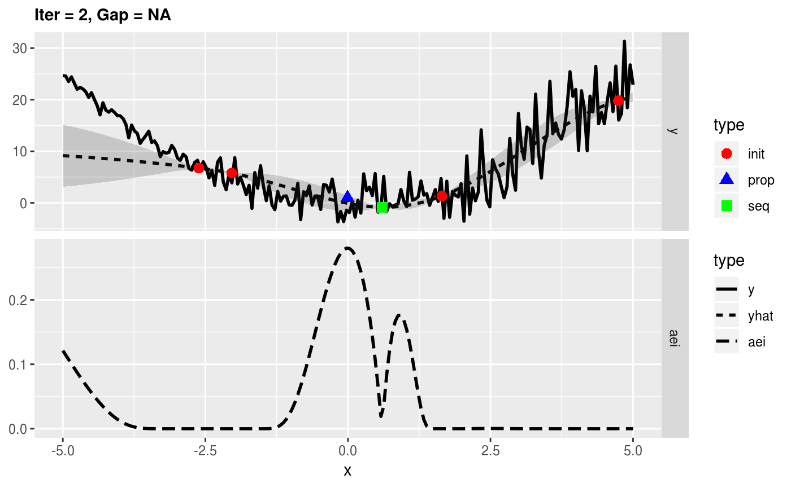
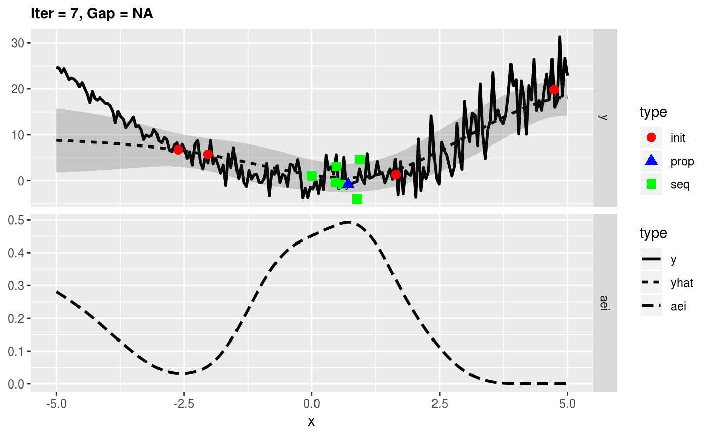

This vignette will give you a short overview about techniques in mlrMBO to handle optimization of noisy objective functions.
You can also try to reduce noise by using parallel evaluations of the same setting as explained in the Vignette about parallelization.
Like always let’s start with the function we want to optimize, but this time it will be noisy. Note that Kriging requires homoscedasticity but slight dependencies of the variance on the \(\boldsymbol{x}\) can be acceptable like in the following example:
library(mlrMBO)
library(ggplot2)
fun = function(x) {
rnorm(1, mean = x^2, sd = 0.5 + 0.5*(x+5))
}
obj.fun = makeSingleObjectiveFunction(name = "noisy_parable", fn = fun, has.simple.signature = TRUE, par.set = makeNumericParamSet("x", 1, -5, 5), noisy = TRUE)
# visualize the function
autoplot(obj.fun, length.out = 200)
As you can see the function is more noisy for large values of \(\boldsymbol{x}\) so that the true optimum at x=0 appears to be hidden. It is important to consider the way the final solution is generated (final.method). By default the best observed \(y\) value and its corresponding \(\boldsymbol{x}\)-values are returned as the optimal solution but in the case of noisy optimization the lowest observed \(y\) value can just be the result of noise. Preferably the best predicted value of \(y\) is taken as the prediction of the surrogate reflects the mean and is less affected by the noise.
For noisy optimization we there are two infill criteria that are recommended:
aei: In contrast to the Expected Improvement the Augmented Expected Improvement does not look at the best observed value for reference but at the effective best solution: \[y^{\ast}_{\min} := \min\limits_{\boldsymbol{x} \in \{\boldsymbol{x}^{(1)}, \ldots, \boldsymbol{x}^{(j)}\}} \hat{\mu}(\boldsymbol{x}) - \hat{s}(\boldsymbol{x})\] The final acquisition function is then similar to the Expected Improvement except from an additional factor that takes the nugget effect \(\sigma_{\epsilon}\) into account (Note: Only supported for DiceKriging, for other surrogates \(\sigma_{\epsilon}\) will be estimated by the square root of the residuals variance.): \[\operatorname{AEI}(\boldsymbol{x}) = \left( y^{\ast}_{\min} - \hat{\mu}(\boldsymbol{x}) \right) \Phi \left( \frac{y^{\ast}_{\min} - \hat{\mu}(\boldsymbol{x}))}{\hat{s}(\boldsymbol{x})} \right) + \hat{s}(\boldsymbol{x}) \phi \left( \frac{y^{\ast}_{\min} - \hat{\mu}(\boldsymbol{x})}{\hat{s}(\boldsymbol{x})} \right) \cdot \left(1 - \frac{\sigma_{\epsilon}}{\sqrt{\sigma_{\epsilon}^2 + \hat{s}^2(\boldsymbol{x})}} \right)\]
eqi: The Expected Quantile Improvement similarly to the Augmented Expected Improvement does not use an actual observed \(y\) value as reference but the posterior distribution to calculate the \(\beta\) quantile \(q\) at already evaluated points \(\boldsymbol{x}\). The value \(\beta\) can be supplied by the user calling i.e. makeMBOInfillCritEQI(eqi.beta = 0.9). \[\operatorname{EQI}(\boldsymbol{x}) &= \left(q_{\min} - q(\boldsymbol{x}) \right) \Phi \left( \frac{q_{\min} - q(\boldsymbol{x})}{s_{q(\boldsymbol{x})}} \right) + s_{q(\boldsymbol{x})} \phi \left( \frac{ q_{\min} - q(\boldsymbol{x})}{s_{q(\boldsymbol{x})}} \right)\]
For simplification we will let MBO automatically decide for the regression method and the initial design. As the parameter space is purely numeric MBO will use Kriging, which is exactly what we want.
# Kriging can create a lot of console output, which we want tu surpress here:
configureMlr(on.learner.warning = "quiet", show.learner.output = FALSE)
res = mbo(obj.fun, control = ctrl, show.info = FALSE)
res$x
## $x
## [1] 0.341864
res$y
## [1] -1.478403As you can see the optimization got fairly close to the minimum at \(x = 0\) even though the noise in this area is pretty high.
We can conduct the same optimization using the aei criterion. This time we will make use of exampleRun to visualize the optimization.
ctrl = setMBOControlInfill(ctrl, crit = crit.aei)
# Kriging can create a lot of console output, which we want tu surpress here:
configureMlr(on.learner.warning = "quiet", show.learner.output = FALSE)
set.seed(1)
res = exampleRun(obj.fun, control = ctrl, show.info = FALSE, points.per.dim = 200, noisy.evals = 1)First we have a look at the optimization result which is similar to the one obtained with the eqi.
Looking at the surrogate fit during the run we can see that the noise makes it difficult for the Kriging to find the right fit and so it falls back to the mean regression. This leads to the infill criterion to be constant and to a purely random proposal, which is not necessarily that bad as long as it does not happen too often.
